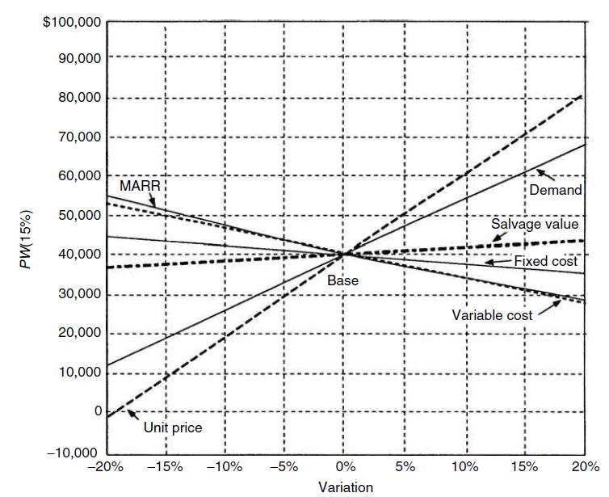

← Back to Index
Example 60 (Slide 205)
(b) Sensitivity Graph:
Figure shows the transmission project’s sensitivity
graphs for six of the key input variables. The base-case
NPW is plotted on the ordinate of the graph at the
value
1.0.
Next, the value of product demand is reduced to 0.95
of its base-case value, and the NPW is recomputed with
all other variables held at their base-case value. We
repeat the process by either decreasing or increasing
the
relative
deviation
from
the
base
case.
we see that the project’s NPW is very sensitive to
changes in product demand and unit price, is fairly
sensitive to changes in the variable costs, and is
relatively insensitive to changes in the fixed cost
and the salvage value.
205
Example: continue….
